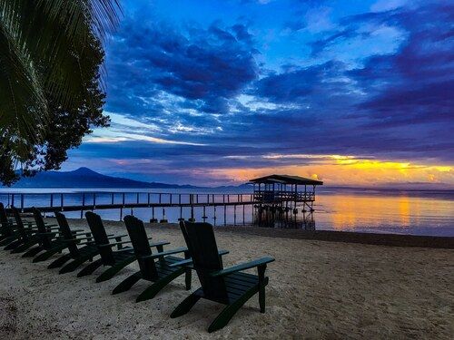
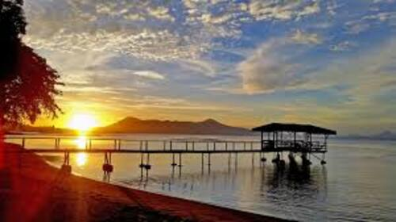

-


West New Britain, a province on the western part of New Britain Island in Papua New Guinea, is known for its lush rainforests, volcanic landscapes, and rich marine life. Its capital, Kimbe, serves as a hub for agriculture, particularly oil palm, cocoa, and coconut plantations, while local communities maintain vibrant cultural traditions and languages. The province’s natural beauty, including active volcanoes, coral reefs, and diverse wildlife, makes it both ecologically significant and increasingly popular for eco-tourism.